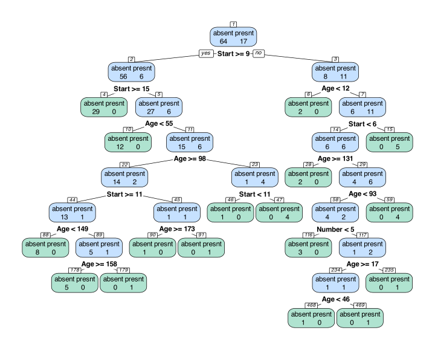
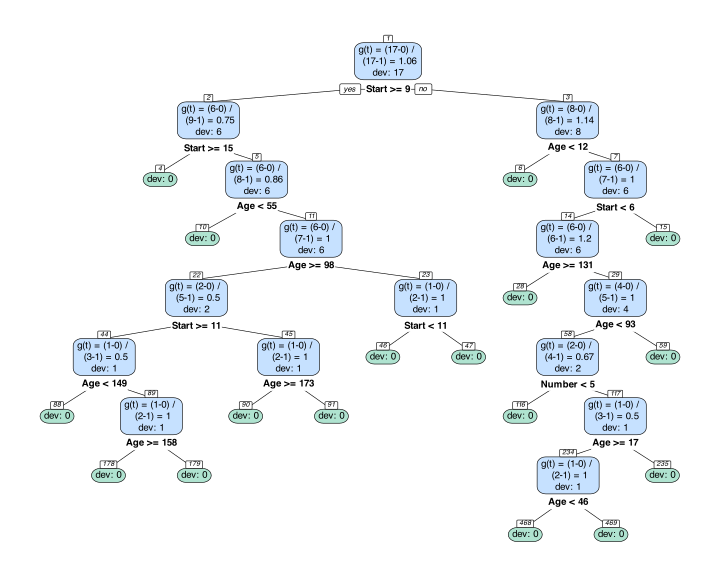
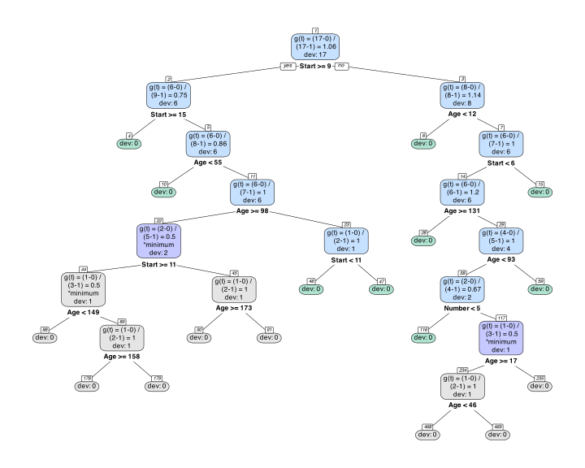
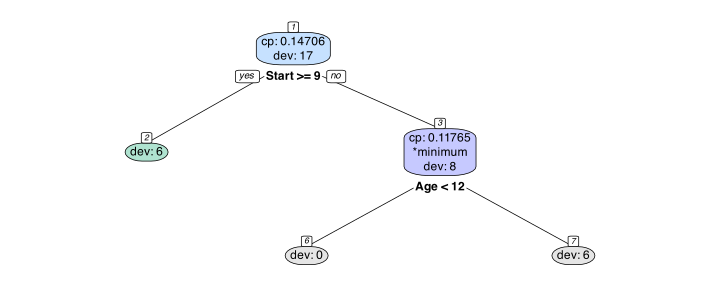
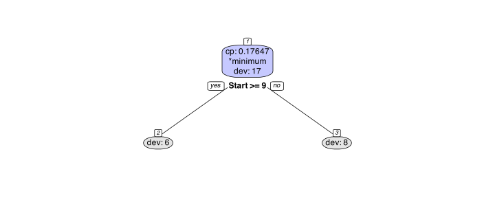

This package provides one function, annotree(), which is a wrapper for rpart.plot::prp(). By employing customized labeling functions under the hood, annotree() helps us visualize complexity parameter calculations. These annotations are helpful for explaining CART’s pruning algorithm.
Example
Did you ever create a classification tree with rpart, view the cptable returned and wonder how the columns were calculated? This package creates custom label functions and then calls rpart.plot::prp() to create tree diagrams that will aid in understanding how this table summarizes the pruning options. Let’s start with an example.
We create a large tree with rpart::rpart() and visualize it with annotree(). The data is from the rpart package:
library(rpart)
head(kyphosis)
#> Kyphosis Age Number Start
#> 1 absent 71 3 5
#> 2 absent 158 3 14
#> 3 present 128 4 5
#> 4 absent 2 5 1
#> 5 absent 1 4 15
#> 6 absent 1 2 16Kyphosis – type of deformation absent or present after surgery
Age – in months
Number – the number of vertebrae involved
Start – the number of the first (topmost) vertebra operated on
The goal is to classify the Kyphosis variable based on Age, Number and Start. By setting the parameter show_classes = TRUE in the call to annotree() below, the nodes are labeled with class labels and class counts.
kmod <- rpart(Kyphosis ~ Age + Number + Start, data = kyphosis, cp = 0, minsplit = 2)
library(annotreer)
annotree(kmod, show_classes = TRUE)
Since we set the parameters of rpart() to grow as large a tree as possible, the deviance for all of the leaf nodes is zero: every leaf node has a zero for one of the classes. We can make the deviance of the leaves more explict by setting show_leaf_dev to TRUE:
annotree(kmod, show_classes = TRUE, show_leaf_dev = TRUE)
Now we turn to the pruning process. rpart() returns a cptable which provides pruning options. Following the cost complexity pruning algorithm of CART (see Breiman, et al. 1984) the table does not show every possible subtree, only the ones produced by sequentially pruning the next weakest link until the tree is reduced to a single node.
In this particular case, we are given 6 options shown in the nsplit column: 0, 1, 2, 5, 10, and 16 splits. Each of the larger subtrees contains the smaller ones, as we’ll see when we get into the details of the pruning process.
kmod$cptable
#> CP nsplit rel error xerror xstd
#> 1 0.17647 0 1.0000 1.000 0.2156
#> 2 0.11765 1 0.8235 1.118 0.2243
#> 3 0.07843 2 0.7059 1.118 0.2243
#> 4 0.05882 5 0.4706 1.118 0.2243
#> 5 0.02941 10 0.1765 1.118 0.2243
#> 6 0.00000 16 0.0000 1.118 0.2243The CP column shows the minimum complexity parameter for a tree of the corresponding number of splits. For example if we set the cp value to a number below 0.07843 and above 0.05882, when pruning, the subtree will have 5 splits:

How the cptable is created
To understand how rpart() is created we’ll start with some definitions:
A branch includes an internal node and all of its descendants.
Pruning a branch refers to removing all of the descendants of a node, i.e. collapsing them into the root node of the branch.
A subtree refers to the original tree after pruning.
The algorithm for pruning a classification tree begins with calculating the deviance reduction per split for all internal nodes on the large tree. In this context, deviance means misclassified cases, which differs from the tree growing process in which the Gini index, not the number misclassified, is used to determine the next optimal split.
The CP values in the table are a scaled version of , the cost complexity value, which is a direct measure of the misclassification reduction per split. For example, if it takes two splits to reduce the number of misclassified by one, then would equal 0.5. We’ll work in terms of since it’s more intuitive, and return to CP later on.
More formally, for all internal nodes of the tree,
where
is a node in the decision tree,
is the subtree rooted at node , including and all of its descendants,
is the set of terminal (leaf) nodes in the subtree ,
is the risk at node , in this case, the deviance or misclassified cases,
is the total risk of the subtree , meaning the sum of risks at all terminal nodes in , and
is the number of terminal nodes (leaves) in the subtree ,.
Less formally it’s the misclassification reduction per split, or,
= (the difference between the deviance of node and the sum of the deviance of node ’s leaf descendents) / (number of splits in branch )
For example, let’s consider the branch with root node 22 in the original large tree. We have:
deviance of branch: 0 (sum of misclassified in leaf nodes)
deviance of node: 2 (misclassified in node)
number of splits in branch: 4 (nodes 22, 44, 89, 45)
Thus
That is, it takes 4 splits to reduce the deviance from 2 to 0, which averages to a 0.5 reduction per split.
The tree below displays for all branches:
annotree(kmod, show_classes = FALSE, show_gt = TRUE,
show_leaf_dev = TRUE, show_internal_dev = TRUE)
By setting show_min to TRUE we can add “*minimum” to the labels for node(s) with the minimum value for . Adding show_pruned changes the color of these nodes and their descendents:
annotree(kmod, show_classes = FALSE, show_gt = TRUE,
show_leaf_dev = TRUE, show_internal_dev = TRUE,
show_min = TRUE, show_pruned = TRUE)
The weakest links have .
In rpart these are scaled so that the root node has an error of 1, accomplished by dividing all values of g(t) by the deviance of the root node. In this case it is 17, so the scaled complexity parameter (henceforth, cp) is 0.5/17 = 0.0294. We will redraw the tree with the scaled values by changing show_gt = TRUE to show_cp = TRUE:
annotree(kmod, show_classes = FALSE, show_cp = TRUE,
show_leaf_dev = TRUE, show_internal_dev = TRUE,
show_min = TRUE, show_pruned = TRUE)
To save space, henceforth we will only show the scaled values.
To determine the next threshold we need to recalculate or cp. This is necessary because pruning the tree changes the cost reductions for the remaining nodes. We will set cp to a value slightly above the minimum; we choose .03.
kmod2 <- prune(kmod, cp = .03)
annotree(kmod2, show_classes = FALSE, show_cp = TRUE,
show_leaf_dev = TRUE, show_internal_dev = TRUE,
show_min = TRUE, show_pruned = TRUE)
We continue in this way until the tree is reduced to a single node:
kmod3 <- prune(kmod2, cp = .06)
annotree(kmod3, show_classes = FALSE, show_cp = TRUE,
show_leaf_dev = TRUE, show_internal_dev = TRUE,
show_min = TRUE, show_pruned = TRUE)
kmod4 <- prune(kmod3, cp = .08)
annotree(kmod4, show_classes = FALSE, show_cp = TRUE,
show_leaf_dev = TRUE, show_internal_dev = TRUE,
show_min = TRUE, show_pruned = TRUE)
kmod5 <- prune(kmod4, cp = .12)
annotree(kmod5, show_classes = FALSE, show_cp = TRUE,
show_leaf_dev = TRUE, show_internal_dev = TRUE,
show_min = TRUE, show_pruned = TRUE)
kmod6 <- prune(kmod5, cp = .18)
annotree(kmod6, show_classes = TRUE, show_cp = TRUE,
show_leaf_dev = TRUE, show_internal_dev = TRUE,
show_min = TRUE, show_pruned = TRUE)Note that the weakest links in the trees above correspond to the values in cptable. We have replicated the process by which the original tree is successively pruned at the new weakest link:
kmod$cptable
#> CP nsplit rel error xerror xstd
#> 1 0.17647 0 1.0000 1.000 0.2156
#> 2 0.11765 1 0.8235 1.118 0.2243
#> 3 0.07843 2 0.7059 1.118 0.2243
#> 4 0.05882 5 0.4706 1.118 0.2243
#> 5 0.02941 10 0.1765 1.118 0.2243
#> 6 0.00000 16 0.0000 1.118 0.2243Again, the table shows the minimum CP value for a particular number of splits. (Due to rounding in the display, the actual number may be slightly higher.)
The rel error displays the sum of the misclassified cases for a tree of the size indicated divided by the misclassified cases in the root node (nsplit = 0) to ensure that the rel error of a tree with no splits is one.
In this case we have:
data.frame(nsplit = kmod$cptable[, "nsplit"],
misclassified = 17*kmod$cptable[, "rel error"])
#> nsplit misclassified
#> 1 0 17
#> 2 1 14
#> 3 2 12
#> 4 5 8
#> 5 10 3
#> 6 16 0which corresponds to the misclassified cases in the trees shown above.